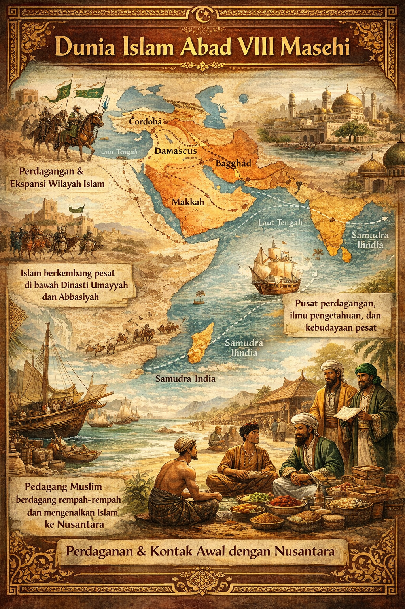

Pada abad 8 Masehi (700–800 M), dunia Islam berada dalam fase perkembangan yang sangat pesat dan dinamis. Setelah wafatnya Nabi Muhammad SAW pada tahun 632 M, Islam tidak hanya berkembang sebagai agama, tetapi juga sebagai kekuatan politik dan peradaban global. Pada awal abad 8, wilayah kekuasaan Islam telah meluas dari Jazirah Arab ke Afrika Utara, Asia Barat, Persia, hingga sebagian wilayah Asia Tengah dan Eropa Selatan. Perluasan ini didorong oleh keberhasilan pemerintahan Islam dalam mengintegrasikan berbagai bangsa dan budaya di bawah satu sistem keagamaan dan pemerintahan. Kondisi ini menciptakan stabilitas politik dan keamanan di jalur-jalur perdagangan internasional, khususnya jalur laut dan darat yang menghubungkan Timur Tengah dengan Asia Selatan dan Asia Tenggara. Situasi dunia Islam yang stabil dan maju pada abad 8 inilah yang menjadi latar belakang penting bagi terjadinya kontak awal antara dunia Islam dan wilayah Nusantara, meskipun proses islamisasi di Nusantara masih berlangsung secara bertahap dan terbatas.
Secara politik, abad 8 merupakan masa transisi penting dalam sejarah Islam. Kekuasaan Islam pada awal abad ini berada di bawah Dinasti Umayyah, yang berpusat di Damaskus, sebelum akhirnya digantikan oleh Dinasti Abbasiyah pada tahun 750 M dengan pusat pemerintahan di Baghdad. Pergantian dinasti ini membawa perubahan besar dalam orientasi politik dan kebudayaan dunia Islam. Dinasti Abbasiyah lebih terbuka terhadap pengaruh non-Arab dan mendorong integrasi berbagai etnis, seperti Persia dan bangsa-bangsa Asia lainnya, dalam pemerintahan dan kehidupan intelektual. Baghdad kemudian berkembang menjadi pusat perdagangan, ilmu pengetahuan, dan kebudayaan dunia Islam. Kondisi politik yang relatif stabil dan pemerintahan yang kuat memungkinkan umat Islam melakukan ekspansi ekonomi dan budaya secara luas. Stabilitas inilah yang membuat para pedagang Muslim merasa aman untuk melakukan perjalanan jauh, termasuk ke wilayah Asia Tenggara, sehingga membuka peluang awal bagi masuknya pengaruh Islam ke Nusantara melalui jalur perdagangan internasional.
Dari sisi ekonomi, dunia Islam pada abad 8 berada dalam masa kejayaan perdagangan. Wilayah kekuasaan Islam membentang di sepanjang jalur perdagangan utama dunia, baik jalur darat seperti Jalur Sutra maupun jalur laut melalui Samudra Hindia. Para pedagang Muslim memainkan peran penting dalam menghubungkan Timur Tengah dengan India, Cina, dan Asia Tenggara. Komoditas seperti rempah-rempah, sutra, emas, dan keramik diperdagangkan secara aktif melalui jaringan perdagangan ini. Nusantara, yang dikenal sebagai penghasil rempah-rempah berkualitas tinggi, menjadi wilayah yang sangat penting dalam jaringan perdagangan global tersebut. Pedagang Muslim yang singgah di pelabuhan-pelabuhan Nusantara tidak hanya membawa barang dagangan, tetapi juga membawa nilai-nilai Islam, seperti kejujuran, etika berdagang, dan ajaran tauhid. Interaksi ekonomi yang intens antara pedagang Muslim dan masyarakat lokal inilah yang menjadi salah satu faktor awal dikenalnya Islam di Nusantara pada abad 8, meskipun belum berkembang secara masif.

Selain politik dan ekonomi, kondisi sosial dan budaya dunia Islam pada abad 8 juga mengalami kemajuan pesat. Pada masa ini, Islam mulai berkembang sebagai peradaban yang kaya akan ilmu pengetahuan, pemikiran, dan budaya. Bahasa Arab berkembang sebagai bahasa ilmu dan administrasi, sementara lembaga-lembaga pendidikan mulai tumbuh di berbagai wilayah Islam. Tradisi keilmuan, penulisan kitab, serta pengkajian Al-Qur’an dan hadis semakin berkembang. Nilai-nilai Islam yang menekankan persaudaraan, keadilan, dan persamaan derajat menarik perhatian banyak masyarakat di luar dunia Arab. Dalam konteks Nusantara, nilai-nilai ini memiliki kesesuaian dengan budaya lokal yang menjunjung tinggi harmoni dan kehidupan bermasyarakat. Oleh karena itu, meskipun pada abad 8 Islam belum menjadi agama mayoritas di Nusantara, ajaran Islam mulai dikenal dan diterima secara terbatas oleh masyarakat pesisir melalui interaksi sosial dengan para pedagang dan pendatang Muslim.
Dengan demikian, kondisi dunia Islam pada abad 8 sangat mendukung terjadinya kontak awal antara Islam dan Nusantara. Stabilitas politik di bawah Dinasti Umayyah dan Abbasiyah, kemajuan ekonomi melalui jaringan perdagangan internasional, serta perkembangan sosial dan budaya Islam menciptakan lingkungan yang kondusif bagi penyebaran Islam ke berbagai wilayah dunia, termasuk Asia Tenggara. Perkembangan Islam di Nusantara pada abad 8 belum bersifat menyeluruh, tetapi merupakan fase awal yang penting dalam proses panjang islamisasi. Kontak awal ini menjadi fondasi bagi perkembangan Islam pada abad-abad berikutnya, ketika Islam mulai berkembang lebih luas dan terorganisasi di Nusantara. Oleh karena itu, memahami kondisi dunia Islam pada abad 8sangat penting untuk melihat bagaimana Islam dapat hadir, dikenal, dan perlahan berkembang di wilayah Nusantara.